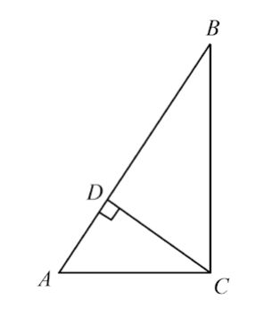

图 5：通过直线CD建立的三个相似直角三角形。三角形 ACD和 CBD的边长之间的关系呈几何比例

希波克拉底来到雅典的时候，那里刚刚经历了瘟疫的肆虐。他立刻投入到解决二倍神坛的研究浪潮中去，并且很快就意识到这个问题的难度非同寻常。经过几年的潜心钻研，他发现这个问题实际上相当于一个等值几何比例的问题。
古希腊人是人类历史上首先对几何问题进行系统抽象研究，并建立理论体系的部族。他们发现了很多定理。这些定理乍一看上去，似乎属于“百无一用”之类的智力游戏，起码对升官发财、娶妻生子没有什么好处。可正是这样的活动促进了人类知识的发展，使我们逐渐有了现代的科学技术。
现在让我们考虑一个任意直角三角形ABC（图5），它的直角在C点的地方。如果从C点作一条直线，使它和线段AB垂直，并且交AB于D点，那么三角形ABC同三角形CBD以及三角形ACD相似，也就是说，它们的形状是一样的，不过大小不同。在这种情况下，它们对应的各条边的长度之间的比例相等，也就是说：
BC/AC=BD/CD=CD/AD（4）

图 5：通过直线CD建立的三个相似直角三角形。三角形 ACD和 CBD的边长之间的关系呈几何比例
换句话说，点D把线段AB分成两段AD和BD，它们同CD的关系是BD/CD=CD/AD。古希腊人把这种关系称为几何比例。